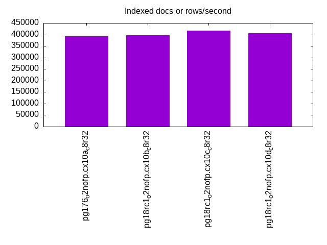
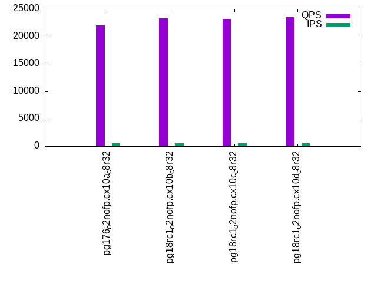

This is a report for the insert benchmark with 800M docs and 1 client(s). It is generated by scripts (bash, awk, sed) and Tufte might not be impressed. An overview of the insert benchmark is here and a short update is here. Below, by DBMS, I mean DBMS+version.config. An example is my8020.c10b40 where my means MySQL, 8020 is version 8.0.20 and c10b40 is the name for the configuration file.
The test server has 8 AMD cores, 32G RAM and an NVMe device for the database. The benchmark was run with 1 client and there were 1 or 3 connections per client (1 for queries or inserts without rate limits, 1+1 for rate limited inserts+deletes). It uses 1 table with a table per client. It loads 800M rows per table without secondary indexes, creates 3 secondary indexes per table, then inserts 4m+1m rows per table with a delete per insert to avoid growing the table. It then does 6 read+write tests for 3600s each that do queries as fast as possible with 100,100,500,500,1000,1000 inserts/s and the same for deletes/s per client concurrent with the queries. The database is larger than memory and the working set it not cached for most benchmark steps. Clients and the DBMS share one server.
The tested DBMS are:
The numbers are inserts/s for l.i0, l.i1 and l.i2, indexed docs (or rows) /s for l.x and queries/s for qr100, qp100 thru qr1000, qp1000" The values are the average rate over the entire test for inserts (IPS) and queries (QPS). The range of values for IPS and QPS is split into 3 parts: bottom 25%, middle 50%, top 25%. Values in the bottom 25% have a red background, values in the top 25% have a green background and values in the middle have no color. A gray background is used for values that can be ignored because the DBMS did not sustain the target insert rate. Red backgrounds are not used when the minimum value is within 80% of the max value.
| dbms | l.i0 | l.x | l.i1 | l.i2 | qr100 | qp100 | qr500 | qp500 | qr1000 | qp1000 |
|---|---|---|---|---|---|---|---|---|---|---|
| pg176_o2nofp.cx10a_c8r32 | 214535 | 392734 | 2847 | 166 | 25416 | 658 | 22024 | 600 | 14912 | 523 |
| pg18rc1_o2nofp.cx10b_c8r32 | 209589 | 395844 | 3650 | 175 | 24754 | 805 | 23329 | 739 | 18866 | 644 |
| pg18rc1_o2nofp.cx10c_c8r32 | 206718 | 416017 | 3656 | 176 | 24916 | 806 | 23211 | 738 | 18743 | 646 |
| pg18rc1_o2nofp.cx10d_c8r32 | 208986 | 405680 | 2851 | 178 | 25251 | 642 | 23517 | 602 | 18997 | 532 |
This table has relative throughput, throughput for the DBMS relative to the DBMS in the first line, using the absolute throughput from the previous table. Values less than 0.95 have a yellow background. Values greater than 1.05 have a blue background.
| dbms | l.i0 | l.x | l.i1 | l.i2 | qr100 | qp100 | qr500 | qp500 | qr1000 | qp1000 |
|---|---|---|---|---|---|---|---|---|---|---|
| pg176_o2nofp.cx10a_c8r32 | 1.00 | 1.00 | 1.00 | 1.00 | 1.00 | 1.00 | 1.00 | 1.00 | 1.00 | 1.00 |
| pg18rc1_o2nofp.cx10b_c8r32 | 0.98 | 1.01 | 1.28 | 1.05 | 0.97 | 1.22 | 1.06 | 1.23 | 1.27 | 1.23 |
| pg18rc1_o2nofp.cx10c_c8r32 | 0.96 | 1.06 | 1.28 | 1.06 | 0.98 | 1.22 | 1.05 | 1.23 | 1.26 | 1.24 |
| pg18rc1_o2nofp.cx10d_c8r32 | 0.97 | 1.03 | 1.00 | 1.07 | 0.99 | 0.98 | 1.07 | 1.00 | 1.27 | 1.02 |
This lists the average rate of inserts/s for the tests that do inserts concurrent with queries. For such tests the query rate is listed in the table above. The read+write tests are setup so that the insert rate should match the target rate every second. Cells that are not at least 95% of the target have a red background to indicate a failure to satisfy the target.
| dbms | qr100.L1 | qp100.L2 | qr500.L3 | qp500.L4 | qr1000.L5 | qp1000.L6 |
|---|---|---|---|---|---|---|
| pg176_o2nofp.cx10a_c8r32 | 100 | 100 | 500 | 500 | 975 | 957 |
| pg18rc1_o2nofp.cx10b_c8r32 | 100 | 100 | 500 | 500 | 999 | 999 |
| pg18rc1_o2nofp.cx10c_c8r32 | 100 | 100 | 499 | 499 | 999 | 998 |
| pg18rc1_o2nofp.cx10d_c8r32 | 100 | 100 | 500 | 500 | 999 | 999 |
| target | 100 | 100 | 500 | 500 | 1000 | 1000 |
l.i0: load without secondary indexes. Graphs for performance per 1-second interval are here.
Average throughput:
Insert response time histogram: each cell has the percentage of responses that take <= the time in the header and max is the max response time in seconds. For the max column values in the top 25% of the range have a red background and in the bottom 25% of the range have a green background. The red background is not used when the min value is within 80% of the max value.
| dbms | 256us | 1ms | 4ms | 16ms | 64ms | 256ms | 1s | 4s | 16s | gt | max |
|---|---|---|---|---|---|---|---|---|---|---|---|
| pg176_o2nofp.cx10a_c8r32 | 99.982 | 0.015 | 0.002 | 0.001 | 0.040 | ||||||
| pg18rc1_o2nofp.cx10b_c8r32 | 99.983 | 0.014 | 0.003 | nonzero | 0.042 | ||||||
| pg18rc1_o2nofp.cx10c_c8r32 | 99.982 | 0.015 | 0.003 | nonzero | 0.047 | ||||||
| pg18rc1_o2nofp.cx10d_c8r32 | 99.982 | 0.014 | 0.003 | nonzero | 0.043 |
Performance metrics for the DBMS listed above. Some are normalized by throughput, others are not. Legend for results is here.
ips qps rps rmbps wps wmbps rpq rkbpq wpi wkbpi csps cpups cspq cpupq dbgb1 dbgb2 rss maxop p50 p99 tag 214535 0 37 0.3 798.8 88.3 0.000 0.001 0.004 0.422 21359 20.7 0.100 8 76.5 116.6 19.8 0.040 215876 207765 pg176_o2nofp.cx10a_c8r32 209589 0 36 0.3 783.9 86.1 0.000 0.001 0.004 0.421 20856 20.4 0.100 8 76.5 116.6 18.9 0.042 210764 203071 pg18rc1_o2nofp.cx10b_c8r32 206718 0 34 0.3 774.0 85.1 0.000 0.001 0.004 0.422 20698 20.3 0.100 8 76.5 116.6 0.2 0.047 207969 200278 pg18rc1_o2nofp.cx10c_c8r32 208986 0 35 0.3 782.0 85.9 0.000 0.001 0.004 0.421 20930 20.5 0.100 8 76.5 116.6 1.2 0.043 210273 202065 pg18rc1_o2nofp.cx10d_c8r32
l.x: create secondary indexes.
Average throughput:
Performance metrics for the DBMS listed above. Some are normalized by throughput, others are not. Legend for results is here.
ips qps rps rmbps wps wmbps rpq rkbpq wpi wkbpi csps cpups cspq cpupq dbgb1 dbgb2 rss maxop p50 p99 tag 392734 0 1140 135.1 1221.5 146.9 0.003 0.352 0.003 0.383 1077 12.4 0.003 3 153.6 193.7 22.7 0.002 NA NA pg176_o2nofp.cx10a_c8r32 395844 0 1068 131.8 1242.1 147.8 0.003 0.341 0.003 0.382 1122 12.5 0.003 3 153.6 193.7 14.8 0.002 NA NA pg18rc1_o2nofp.cx10b_c8r32 416017 0 1350 150.3 1269.9 155.5 0.003 0.370 0.003 0.383 2171 13.1 0.005 3 153.6 193.7 23.4 0.003 NA NA pg18rc1_o2nofp.cx10c_c8r32 405680 0 1283 145.1 1242.9 151.6 0.003 0.366 0.003 0.383 1779 13.1 0.004 3 153.6 193.7 23.4 0.003 NA NA pg18rc1_o2nofp.cx10d_c8r32
l.i1: continue load after secondary indexes created with 50 inserts per transaction. Graphs for performance per 1-second interval are here.
Average throughput:
Insert response time histogram: each cell has the percentage of responses that take <= the time in the header and max is the max response time in seconds. For the max column values in the top 25% of the range have a red background and in the bottom 25% of the range have a green background. The red background is not used when the min value is within 80% of the max value.
| dbms | 256us | 1ms | 4ms | 16ms | 64ms | 256ms | 1s | 4s | 16s | gt | max |
|---|---|---|---|---|---|---|---|---|---|---|---|
| pg176_o2nofp.cx10a_c8r32 | 90.094 | 8.321 | 1.584 | 0.001 | 0.509 | ||||||
| pg18rc1_o2nofp.cx10b_c8r32 | 98.340 | 1.541 | 0.119 | 0.135 | |||||||
| pg18rc1_o2nofp.cx10c_c8r32 | 98.034 | 1.846 | 0.120 | 0.121 | |||||||
| pg18rc1_o2nofp.cx10d_c8r32 | 85.936 | 12.840 | 1.221 | 0.003 | 0.391 |
Delete response time histogram: each cell has the percentage of responses that take <= the time in the header and max is the max response time in seconds. For the max column values in the top 25% of the range have a red background and in the bottom 25% of the range have a green background. The red background is not used when the min value is within 80% of the max value.
| dbms | 256us | 1ms | 4ms | 16ms | 64ms | 256ms | 1s | 4s | 16s | gt | max |
|---|---|---|---|---|---|---|---|---|---|---|---|
| pg176_o2nofp.cx10a_c8r32 | 1.439 | 16.934 | 41.771 | 39.856 | 0.031 | ||||||
| pg18rc1_o2nofp.cx10b_c8r32 | 0.860 | 17.534 | 43.816 | 37.790 | 0.032 | ||||||
| pg18rc1_o2nofp.cx10c_c8r32 | 0.923 | 17.381 | 44.824 | 36.873 | 0.030 | ||||||
| pg18rc1_o2nofp.cx10d_c8r32 | 1.109 | 17.680 | 44.745 | 36.466 | 0.031 |
Performance metrics for the DBMS listed above. Some are normalized by throughput, others are not. Legend for results is here.
ips qps rps rmbps wps wmbps rpq rkbpq wpi wkbpi csps cpups cspq cpupq dbgb1 dbgb2 rss maxop p50 p99 tag 2847 0 4080 32.1 3384.8 57.9 1.433 11.535 1.189 20.837 9191 12.3 3.229 346 154.3 194.3 22.6 0.509 2450 650 pg176_o2nofp.cx10a_c8r32 3650 0 5234 41.2 4341.6 74.6 1.434 11.561 1.190 20.917 11767 15.2 3.224 333 154.3 194.3 22.5 0.135 2849 1949 pg18rc1_o2nofp.cx10b_c8r32 3656 0 5286 41.6 4326.8 74.1 1.446 11.663 1.183 20.749 11871 15.1 3.247 330 154.3 194.3 22.9 0.121 2849 1600 pg18rc1_o2nofp.cx10c_c8r32 2851 0 4097 32.3 3402.0 58.3 1.437 11.595 1.193 20.930 9218 11.9 3.233 334 154.3 194.3 22.9 0.391 2450 750 pg18rc1_o2nofp.cx10d_c8r32
l.i2: continue load after secondary indexes created with 5 inserts per transaction. Graphs for performance per 1-second interval are here.
Average throughput:
Insert response time histogram: each cell has the percentage of responses that take <= the time in the header and max is the max response time in seconds. For the max column values in the top 25% of the range have a red background and in the bottom 25% of the range have a green background. The red background is not used when the min value is within 80% of the max value.
| dbms | 256us | 1ms | 4ms | 16ms | 64ms | 256ms | 1s | 4s | 16s | gt | max |
|---|---|---|---|---|---|---|---|---|---|---|---|
| pg176_o2nofp.cx10a_c8r32 | 11.162 | 88.807 | 0.031 | 0.001 | 0.018 | ||||||
| pg18rc1_o2nofp.cx10b_c8r32 | 17.865 | 81.865 | 0.268 | 0.002 | 0.018 | ||||||
| pg18rc1_o2nofp.cx10c_c8r32 | 18.712 | 81.061 | 0.226 | 0.002 | 0.031 | ||||||
| pg18rc1_o2nofp.cx10d_c8r32 | 11.795 | 88.182 | 0.022 | 0.001 | 0.022 |
Delete response time histogram: each cell has the percentage of responses that take <= the time in the header and max is the max response time in seconds. For the max column values in the top 25% of the range have a red background and in the bottom 25% of the range have a green background. The red background is not used when the min value is within 80% of the max value.
| dbms | 256us | 1ms | 4ms | 16ms | 64ms | 256ms | 1s | 4s | 16s | gt | max |
|---|---|---|---|---|---|---|---|---|---|---|---|
| pg176_o2nofp.cx10a_c8r32 | 99.999 | 0.001 | 0.080 | ||||||||
| pg18rc1_o2nofp.cx10b_c8r32 | 99.999 | 0.001 | 0.083 | ||||||||
| pg18rc1_o2nofp.cx10c_c8r32 | 99.999 | 0.001 | 0.082 | ||||||||
| pg18rc1_o2nofp.cx10d_c8r32 | 99.999 | 0.001 | 0.081 |
Performance metrics for the DBMS listed above. Some are normalized by throughput, others are not. Legend for results is here.
ips qps rps rmbps wps wmbps rpq rkbpq wpi wkbpi csps cpups cspq cpupq dbgb1 dbgb2 rss maxop p50 p99 tag 166 0 178 1.4 495.2 6.8 1.067 8.574 2.974 41.781 1077 12.7 6.466 6102 154.4 194.5 22.7 0.018 165 145 pg176_o2nofp.cx10a_c8r32 175 0 186 1.5 503.8 7.0 1.066 8.564 2.879 40.999 1120 12.8 6.400 5851 154.4 194.5 23.3 0.018 175 155 pg18rc1_o2nofp.cx10b_c8r32 176 0 188 1.5 508.5 7.1 1.071 8.677 2.897 41.138 1127 12.7 6.423 5789 154.4 194.5 22.9 0.031 175 155 pg18rc1_o2nofp.cx10c_c8r32 178 0 190 1.5 513.4 7.1 1.071 8.676 2.891 40.880 1135 12.8 6.390 5766 154.4 194.5 23.4 0.022 175 155 pg18rc1_o2nofp.cx10d_c8r32
qr100.L1: range queries with 100 insert/s per client. Graphs for performance per 1-second interval are here.
Average throughput:
Query response time histogram: each cell has the percentage of responses that take <= the time in the header and max is the max response time in seconds. For max values in the top 25% of the range have a red background and in the bottom 25% of the range have a green background. The red background is not used when the min value is within 80% of the max value.
| dbms | 256us | 1ms | 4ms | 16ms | 64ms | 256ms | 1s | 4s | 16s | gt | max |
|---|---|---|---|---|---|---|---|---|---|---|---|
| pg176_o2nofp.cx10a_c8r32 | 99.992 | 0.008 | nonzero | nonzero | nonzero | 0.025 | |||||
| pg18rc1_o2nofp.cx10b_c8r32 | 99.991 | 0.009 | nonzero | nonzero | 0.026 | ||||||
| pg18rc1_o2nofp.cx10c_c8r32 | 99.991 | 0.009 | nonzero | nonzero | 0.041 | ||||||
| pg18rc1_o2nofp.cx10d_c8r32 | 99.989 | 0.011 | nonzero | nonzero | 0.044 |
Insert response time histogram: each cell has the percentage of responses that take <= the time in the header and max is the max response time in seconds. For max values in the top 25% of the range have a red background and in the bottom 25% of the range have a green background. The red background is not used when the min value is within 80% of the max value.
| dbms | 256us | 1ms | 4ms | 16ms | 64ms | 256ms | 1s | 4s | 16s | gt | max |
|---|---|---|---|---|---|---|---|---|---|---|---|
| pg176_o2nofp.cx10a_c8r32 | 99.875 | 0.125 | 0.057 | ||||||||
| pg18rc1_o2nofp.cx10b_c8r32 | 99.917 | 0.056 | 0.028 | 0.074 | |||||||
| pg18rc1_o2nofp.cx10c_c8r32 | 0.028 | 99.917 | 0.056 | 0.055 | |||||||
| pg18rc1_o2nofp.cx10d_c8r32 | 0.056 | 99.889 | 0.056 | 0.056 |
Delete response time histogram: each cell has the percentage of responses that take <= the time in the header and max is the max response time in seconds. For max values in the top 25% of the range have a red background and in the bottom 25% of the range have a green background. The red background is not used when the min value is within 80% of the max value.
| dbms | 256us | 1ms | 4ms | 16ms | 64ms | 256ms | 1s | 4s | 16s | gt | max |
|---|---|---|---|---|---|---|---|---|---|---|---|
| pg176_o2nofp.cx10a_c8r32 | 30.986 | 69.014 | 0.003 | ||||||||
| pg18rc1_o2nofp.cx10b_c8r32 | 58.361 | 41.639 | 0.003 | ||||||||
| pg18rc1_o2nofp.cx10c_c8r32 | 59.556 | 40.444 | 0.002 | ||||||||
| pg18rc1_o2nofp.cx10d_c8r32 | 58.389 | 41.611 | 0.002 |
Performance metrics for the DBMS listed above. Some are normalized by throughput, others are not. Legend for results is here.
ips qps rps rmbps wps wmbps rpq rkbpq wpi wkbpi csps cpups cspq cpupq dbgb1 dbgb2 rss maxop p50 p99 tag 100 25416 111 0.9 114.8 2.3 0.004 0.035 1.149 23.491 97342 8.5 3.830 27 154.5 193.8 23.3 0.025 25308 24695 pg176_o2nofp.cx10a_c8r32 100 24754 111 0.9 67.4 1.9 0.004 0.036 0.675 19.515 94728 8.6 3.827 28 154.4 191.7 23.3 0.026 24684 24379 pg18rc1_o2nofp.cx10b_c8r32 100 24916 111 0.9 67.9 1.9 0.004 0.036 0.680 19.568 95350 8.6 3.827 28 154.5 192.7 23.4 0.041 24989 24492 pg18rc1_o2nofp.cx10c_c8r32 100 25251 111 0.9 69.0 1.9 0.004 0.036 0.690 19.623 96571 8.4 3.824 27 154.4 191.7 23.4 0.044 25371 24668 pg18rc1_o2nofp.cx10d_c8r32
qp100.L2: point queries with 100 insert/s per client. Graphs for performance per 1-second interval are here.
Average throughput:
Query response time histogram: each cell has the percentage of responses that take <= the time in the header and max is the max response time in seconds. For max values in the top 25% of the range have a red background and in the bottom 25% of the range have a green background. The red background is not used when the min value is within 80% of the max value.
| dbms | 256us | 1ms | 4ms | 16ms | 64ms | 256ms | 1s | 4s | 16s | gt | max |
|---|---|---|---|---|---|---|---|---|---|---|---|
| pg176_o2nofp.cx10a_c8r32 | 3.414 | 96.560 | 0.026 | nonzero | 0.043 | ||||||
| pg18rc1_o2nofp.cx10b_c8r32 | 19.606 | 80.289 | 0.101 | 0.004 | 0.035 | ||||||
| pg18rc1_o2nofp.cx10c_c8r32 | 19.667 | 80.249 | 0.083 | 0.002 | 0.027 | ||||||
| pg18rc1_o2nofp.cx10d_c8r32 | 3.044 | 96.930 | 0.025 | nonzero | 0.029 |
Insert response time histogram: each cell has the percentage of responses that take <= the time in the header and max is the max response time in seconds. For max values in the top 25% of the range have a red background and in the bottom 25% of the range have a green background. The red background is not used when the min value is within 80% of the max value.
| dbms | 256us | 1ms | 4ms | 16ms | 64ms | 256ms | 1s | 4s | 16s | gt | max |
|---|---|---|---|---|---|---|---|---|---|---|---|
| pg176_o2nofp.cx10a_c8r32 | 99.875 | 0.125 | 0.036 | ||||||||
| pg18rc1_o2nofp.cx10b_c8r32 | 93.194 | 6.667 | 0.139 | 0.196 | |||||||
| pg18rc1_o2nofp.cx10c_c8r32 | 92.528 | 7.417 | 0.056 | 0.187 | |||||||
| pg18rc1_o2nofp.cx10d_c8r32 | 99.917 | 0.083 | 0.028 |
Delete response time histogram: each cell has the percentage of responses that take <= the time in the header and max is the max response time in seconds. For max values in the top 25% of the range have a red background and in the bottom 25% of the range have a green background. The red background is not used when the min value is within 80% of the max value.
| dbms | 256us | 1ms | 4ms | 16ms | 64ms | 256ms | 1s | 4s | 16s | gt | max |
|---|---|---|---|---|---|---|---|---|---|---|---|
| pg176_o2nofp.cx10a_c8r32 | 75.236 | 24.764 | 0.012 | ||||||||
| pg18rc1_o2nofp.cx10b_c8r32 | 5.500 | 94.444 | 0.056 | 0.007 | |||||||
| pg18rc1_o2nofp.cx10c_c8r32 | 4.417 | 95.556 | 0.028 | 0.007 | |||||||
| pg18rc1_o2nofp.cx10d_c8r32 | 4.194 | 95.778 | 0.028 | 0.007 |
Performance metrics for the DBMS listed above. Some are normalized by throughput, others are not. Legend for results is here.
ips qps rps rmbps wps wmbps rpq rkbpq wpi wkbpi csps cpups cspq cpupq dbgb1 dbgb2 rss maxop p50 p99 tag 100 658 8263 64.6 307.0 3.8 12.567 100.593 3.070 38.420 18462 2.3 28.079 280 154.5 188.8 23.3 0.043 672 448 pg176_o2nofp.cx10a_c8r32 100 805 10214 79.8 351.6 4.1 12.683 101.520 3.516 41.985 22717 3.6 28.209 358 154.5 191.7 23.3 0.035 832 544 pg18rc1_o2nofp.cx10b_c8r32 100 806 10229 80.0 348.9 4.1 12.685 101.555 3.493 41.825 22756 3.6 28.219 357 154.5 192.7 23.4 0.027 832 544 pg18rc1_o2nofp.cx10c_c8r32 100 642 8270 64.7 345.6 4.1 12.877 103.231 3.456 41.524 18390 2.6 28.636 324 154.5 191.7 23.4 0.029 656 432 pg18rc1_o2nofp.cx10d_c8r32
qr500.L3: range queries with 500 insert/s per client. Graphs for performance per 1-second interval are here.
Average throughput:
Query response time histogram: each cell has the percentage of responses that take <= the time in the header and max is the max response time in seconds. For max values in the top 25% of the range have a red background and in the bottom 25% of the range have a green background. The red background is not used when the min value is within 80% of the max value.
| dbms | 256us | 1ms | 4ms | 16ms | 64ms | 256ms | 1s | 4s | 16s | gt | max |
|---|---|---|---|---|---|---|---|---|---|---|---|
| pg176_o2nofp.cx10a_c8r32 | 99.983 | 0.017 | nonzero | nonzero | 0.006 | ||||||
| pg18rc1_o2nofp.cx10b_c8r32 | 99.984 | 0.016 | nonzero | nonzero | 0.007 | ||||||
| pg18rc1_o2nofp.cx10c_c8r32 | 99.984 | 0.015 | 0.001 | nonzero | nonzero | nonzero | 0.312 | ||||
| pg18rc1_o2nofp.cx10d_c8r32 | 99.982 | 0.018 | nonzero | nonzero | nonzero | 0.022 |
Insert response time histogram: each cell has the percentage of responses that take <= the time in the header and max is the max response time in seconds. For max values in the top 25% of the range have a red background and in the bottom 25% of the range have a green background. The red background is not used when the min value is within 80% of the max value.
| dbms | 256us | 1ms | 4ms | 16ms | 64ms | 256ms | 1s | 4s | 16s | gt | max |
|---|---|---|---|---|---|---|---|---|---|---|---|
| pg176_o2nofp.cx10a_c8r32 | 99.808 | 0.192 | 0.027 | ||||||||
| pg18rc1_o2nofp.cx10b_c8r32 | 99.728 | 0.189 | 0.083 | 0.131 | |||||||
| pg18rc1_o2nofp.cx10c_c8r32 | 99.700 | 0.261 | 0.039 | 0.191 | |||||||
| pg18rc1_o2nofp.cx10d_c8r32 | 99.872 | 0.128 | 0.049 |
Delete response time histogram: each cell has the percentage of responses that take <= the time in the header and max is the max response time in seconds. For max values in the top 25% of the range have a red background and in the bottom 25% of the range have a green background. The red background is not used when the min value is within 80% of the max value.
| dbms | 256us | 1ms | 4ms | 16ms | 64ms | 256ms | 1s | 4s | 16s | gt | max |
|---|---|---|---|---|---|---|---|---|---|---|---|
| pg176_o2nofp.cx10a_c8r32 | 7.803 | 81.294 | 10.903 | 0.021 | |||||||
| pg18rc1_o2nofp.cx10b_c8r32 | 52.628 | 47.372 | 0.013 | ||||||||
| pg18rc1_o2nofp.cx10c_c8r32 | 54.100 | 45.900 | 0.012 | ||||||||
| pg18rc1_o2nofp.cx10d_c8r32 | 52.744 | 47.256 | 0.012 |
Performance metrics for the DBMS listed above. Some are normalized by throughput, others are not. Legend for results is here.
ips qps rps rmbps wps wmbps rpq rkbpq wpi wkbpi csps cpups cspq cpupq dbgb1 dbgb2 rss maxop p50 p99 tag 500 22024 756 6.0 499.3 10.6 0.034 0.278 0.999 21.741 85771 10.8 3.894 39 154.7 183.8 23.3 0.006 21927 20205 pg176_o2nofp.cx10a_c8r32 500 23329 869 6.9 344.3 9.3 0.037 0.301 0.689 19.106 90833 9.7 3.894 33 154.5 190.2 23.3 0.007 23419 22275 pg18rc1_o2nofp.cx10b_c8r32 499 23211 872 6.9 347.3 9.3 0.038 0.305 0.695 19.170 90443 9.9 3.897 34 154.5 190.4 23.4 0.312 23303 22157 pg18rc1_o2nofp.cx10c_c8r32 500 23517 870 6.9 356.2 9.4 0.037 0.301 0.713 19.303 91553 9.6 3.893 33 154.5 190.2 23.4 0.022 23549 22390 pg18rc1_o2nofp.cx10d_c8r32
qp500.L4: point queries with 500 insert/s per client. Graphs for performance per 1-second interval are here.
Average throughput:
Query response time histogram: each cell has the percentage of responses that take <= the time in the header and max is the max response time in seconds. For max values in the top 25% of the range have a red background and in the bottom 25% of the range have a green background. The red background is not used when the min value is within 80% of the max value.
| dbms | 256us | 1ms | 4ms | 16ms | 64ms | 256ms | 1s | 4s | 16s | gt | max |
|---|---|---|---|---|---|---|---|---|---|---|---|
| pg176_o2nofp.cx10a_c8r32 | 1.464 | 98.406 | 0.128 | 0.003 | 0.045 | ||||||
| pg18rc1_o2nofp.cx10b_c8r32 | 10.863 | 88.556 | 0.568 | 0.013 | 0.038 | ||||||
| pg18rc1_o2nofp.cx10c_c8r32 | 10.861 | 88.544 | 0.575 | 0.018 | 0.001 | 0.112 | |||||
| pg18rc1_o2nofp.cx10d_c8r32 | nonzero | 1.434 | 98.438 | 0.128 | 0.012 |
Insert response time histogram: each cell has the percentage of responses that take <= the time in the header and max is the max response time in seconds. For max values in the top 25% of the range have a red background and in the bottom 25% of the range have a green background. The red background is not used when the min value is within 80% of the max value.
| dbms | 256us | 1ms | 4ms | 16ms | 64ms | 256ms | 1s | 4s | 16s | gt | max |
|---|---|---|---|---|---|---|---|---|---|---|---|
| pg176_o2nofp.cx10a_c8r32 | 99.217 | 0.761 | 0.022 | 0.175 | |||||||
| pg18rc1_o2nofp.cx10b_c8r32 | 95.278 | 4.622 | 0.100 | 0.192 | |||||||
| pg18rc1_o2nofp.cx10c_c8r32 | 95.728 | 4.100 | 0.156 | 0.017 | 0.566 | ||||||
| pg18rc1_o2nofp.cx10d_c8r32 | 99.222 | 0.778 | 0.033 |
Delete response time histogram: each cell has the percentage of responses that take <= the time in the header and max is the max response time in seconds. For max values in the top 25% of the range have a red background and in the bottom 25% of the range have a green background. The red background is not used when the min value is within 80% of the max value.
| dbms | 256us | 1ms | 4ms | 16ms | 64ms | 256ms | 1s | 4s | 16s | gt | max |
|---|---|---|---|---|---|---|---|---|---|---|---|
| pg176_o2nofp.cx10a_c8r32 | 0.072 | 99.928 | 0.057 | ||||||||
| pg18rc1_o2nofp.cx10b_c8r32 | 99.944 | 0.056 | 0.036 | ||||||||
| pg18rc1_o2nofp.cx10c_c8r32 | 99.939 | 0.061 | 0.035 | ||||||||
| pg18rc1_o2nofp.cx10d_c8r32 | 99.950 | 0.050 | 0.034 |
Performance metrics for the DBMS listed above. Some are normalized by throughput, others are not. Legend for results is here.
ips qps rps rmbps wps wmbps rpq rkbpq wpi wkbpi csps cpups cspq cpupq dbgb1 dbgb2 rss maxop p50 p99 tag 500 600 8634 67.5 1383.5 17.0 14.379 115.075 2.767 34.796 19096 6.2 31.800 826 154.8 182.9 23.3 0.045 608 400 pg176_o2nofp.cx10a_c8r32 500 739 10387 81.2 1580.9 18.5 14.052 112.508 3.164 37.870 22939 4.9 31.032 530 154.6 188.5 23.3 0.038 768 480 pg18rc1_o2nofp.cx10b_c8r32 499 738 10355 81.0 1580.6 18.5 14.041 112.504 3.165 37.897 22878 4.9 31.021 532 154.6 188.6 23.4 0.112 768 480 pg18rc1_o2nofp.cx10c_c8r32 500 602 8696 68.1 1553.4 18.3 14.443 115.843 3.107 37.404 19184 4.8 31.862 638 154.6 188.4 23.4 0.012 624 448 pg18rc1_o2nofp.cx10d_c8r32
qr1000.L5: range queries with 1000 insert/s per client. Graphs for performance per 1-second interval are here.
Average throughput:
Query response time histogram: each cell has the percentage of responses that take <= the time in the header and max is the max response time in seconds. For max values in the top 25% of the range have a red background and in the bottom 25% of the range have a green background. The red background is not used when the min value is within 80% of the max value.
| dbms | 256us | 1ms | 4ms | 16ms | 64ms | 256ms | 1s | 4s | 16s | gt | max |
|---|---|---|---|---|---|---|---|---|---|---|---|
| pg176_o2nofp.cx10a_c8r32 | 99.927 | 0.072 | 0.001 | nonzero | nonzero | 0.023 | |||||
| pg18rc1_o2nofp.cx10b_c8r32 | 99.959 | 0.038 | 0.002 | nonzero | nonzero | 0.017 | |||||
| pg18rc1_o2nofp.cx10c_c8r32 | 99.953 | 0.045 | 0.002 | nonzero | nonzero | nonzero | 0.110 | ||||
| pg18rc1_o2nofp.cx10d_c8r32 | 99.950 | 0.049 | 0.002 | nonzero | nonzero | nonzero | 0.070 |
Insert response time histogram: each cell has the percentage of responses that take <= the time in the header and max is the max response time in seconds. For max values in the top 25% of the range have a red background and in the bottom 25% of the range have a green background. The red background is not used when the min value is within 80% of the max value.
| dbms | 256us | 1ms | 4ms | 16ms | 64ms | 256ms | 1s | 4s | 16s | gt | max |
|---|---|---|---|---|---|---|---|---|---|---|---|
| pg176_o2nofp.cx10a_c8r32 | 0.050 | 99.763 | 0.188 | 0.030 | |||||||
| pg18rc1_o2nofp.cx10b_c8r32 | 98.919 | 0.942 | 0.139 | 0.230 | |||||||
| pg18rc1_o2nofp.cx10c_c8r32 | 98.803 | 1.075 | 0.122 | 0.161 | |||||||
| pg18rc1_o2nofp.cx10d_c8r32 | 99.667 | 0.333 | 0.031 |
Delete response time histogram: each cell has the percentage of responses that take <= the time in the header and max is the max response time in seconds. For max values in the top 25% of the range have a red background and in the bottom 25% of the range have a green background. The red background is not used when the min value is within 80% of the max value.
| dbms | 256us | 1ms | 4ms | 16ms | 64ms | 256ms | 1s | 4s | 16s | gt | max |
|---|---|---|---|---|---|---|---|---|---|---|---|
| pg176_o2nofp.cx10a_c8r32 | 99.999 | 0.001 | 0.089 | ||||||||
| pg18rc1_o2nofp.cx10b_c8r32 | 17.756 | 82.244 | 0.055 | ||||||||
| pg18rc1_o2nofp.cx10c_c8r32 | 17.481 | 82.519 | 0.051 | ||||||||
| pg18rc1_o2nofp.cx10d_c8r32 | 17.358 | 82.642 | 0.053 |
Performance metrics for the DBMS listed above. Some are normalized by throughput, others are not. Legend for results is here.
ips qps rps rmbps wps wmbps rpq rkbpq wpi wkbpi csps cpups cspq cpupq dbgb1 dbgb2 rss maxop p50 p99 tag 975 14912 1260 9.9 1284.7 23.7 0.085 0.683 1.317 24.845 59848 21.9 4.013 117 155.4 191.5 23.3 0.023 14888 13070 pg176_o2nofp.cx10a_c8r32 999 18866 1491 11.8 931.4 19.1 0.079 0.641 0.933 19.561 75230 15.9 3.988 67 154.8 187.7 23.3 0.017 18887 17261 pg18rc1_o2nofp.cx10b_c8r32 999 18743 1499 12.0 930.2 19.1 0.080 0.654 0.931 19.558 74812 15.8 3.992 67 154.8 187.8 23.4 0.110 18775 17176 pg18rc1_o2nofp.cx10c_c8r32 999 18997 1494 11.9 937.9 19.1 0.079 0.643 0.938 19.621 75739 15.7 3.987 66 154.8 187.6 23.4 0.070 19005 17270 pg18rc1_o2nofp.cx10d_c8r32
qp1000.L6: point queries with 1000 insert/s per client. Graphs for performance per 1-second interval are here.
Average throughput:
Query response time histogram: each cell has the percentage of responses that take <= the time in the header and max is the max response time in seconds. For max values in the top 25% of the range have a red background and in the bottom 25% of the range have a green background. The red background is not used when the min value is within 80% of the max value.
| dbms | 256us | 1ms | 4ms | 16ms | 64ms | 256ms | 1s | 4s | 16s | gt | max |
|---|---|---|---|---|---|---|---|---|---|---|---|
| pg176_o2nofp.cx10a_c8r32 | 0.466 | 98.363 | 1.145 | 0.025 | 0.050 | ||||||
| pg18rc1_o2nofp.cx10b_c8r32 | 4.343 | 94.359 | 1.268 | 0.030 | 0.038 | ||||||
| pg18rc1_o2nofp.cx10c_c8r32 | 4.584 | 94.100 | 1.286 | 0.030 | 0.037 | ||||||
| pg18rc1_o2nofp.cx10d_c8r32 | 0.464 | 99.235 | 0.301 | nonzero | 0.029 |
Insert response time histogram: each cell has the percentage of responses that take <= the time in the header and max is the max response time in seconds. For max values in the top 25% of the range have a red background and in the bottom 25% of the range have a green background. The red background is not used when the min value is within 80% of the max value.
| dbms | 256us | 1ms | 4ms | 16ms | 64ms | 256ms | 1s | 4s | 16s | gt | max |
|---|---|---|---|---|---|---|---|---|---|---|---|
| pg176_o2nofp.cx10a_c8r32 | 97.062 | 2.810 | 0.128 | 0.182 | |||||||
| pg18rc1_o2nofp.cx10b_c8r32 | 93.431 | 6.308 | 0.261 | 0.181 | |||||||
| pg18rc1_o2nofp.cx10c_c8r32 | 93.094 | 6.650 | 0.256 | 0.176 | |||||||
| pg18rc1_o2nofp.cx10d_c8r32 | 98.969 | 1.031 | 0.040 |
Delete response time histogram: each cell has the percentage of responses that take <= the time in the header and max is the max response time in seconds. For max values in the top 25% of the range have a red background and in the bottom 25% of the range have a green background. The red background is not used when the min value is within 80% of the max value.
| dbms | 256us | 1ms | 4ms | 16ms | 64ms | 256ms | 1s | 4s | 16s | gt | max |
|---|---|---|---|---|---|---|---|---|---|---|---|
| pg176_o2nofp.cx10a_c8r32 | 98.862 | 1.137 | 0.141 | ||||||||
| pg18rc1_o2nofp.cx10b_c8r32 | 99.997 | 0.003 | 0.085 | ||||||||
| pg18rc1_o2nofp.cx10c_c8r32 | 99.997 | 0.003 | 0.082 | ||||||||
| pg18rc1_o2nofp.cx10d_c8r32 | 99.997 | 0.003 | 0.082 |
Performance metrics for the DBMS listed above. Some are normalized by throughput, others are not. Legend for results is here.
ips qps rps rmbps wps wmbps rpq rkbpq wpi wkbpi csps cpups cspq cpupq dbgb1 dbgb2 rss maxop p50 p99 tag 957 523 8794 68.8 2295.7 29.0 16.819 134.776 2.400 31.095 19339 13.7 36.985 2096 155.9 193.2 23.3 0.050 528 368 pg176_o2nofp.cx10a_c8r32 999 644 10471 81.8 2775.4 34.1 16.272 130.236 2.779 34.936 22980 12.8 35.711 1591 155.0 190.6 23.3 0.038 672 320 pg18rc1_o2nofp.cx10b_c8r32 998 646 10476 82.0 2776.2 34.0 16.222 130.058 2.781 34.900 22998 12.9 35.612 1598 155.0 190.6 23.4 0.037 672 320 pg18rc1_o2nofp.cx10c_c8r32 999 532 9036 70.8 2744.1 33.7 16.984 136.216 2.746 34.559 19809 12.1 37.235 1820 155.0 190.3 23.4 0.029 544 384 pg18rc1_o2nofp.cx10d_c8r32
l.i0: load without secondary indexes
Performance metrics for all DBMS, not just the ones listed above. Some are normalized by throughput, others are not. Legend for results is here.
ips qps rps rmbps wps wmbps rpq rkbpq wpi wkbpi csps cpups cspq cpupq dbgb1 dbgb2 rss maxop p50 p99 tag 214535 0 37 0.3 798.8 88.3 0.000 0.001 0.004 0.422 21359 20.7 0.100 8 76.5 116.6 19.8 0.040 215876 207765 pg176_o2nofp.cx10a_c8r32 209589 0 36 0.3 783.9 86.1 0.000 0.001 0.004 0.421 20856 20.4 0.100 8 76.5 116.6 18.9 0.042 210764 203071 pg18rc1_o2nofp.cx10b_c8r32 206718 0 34 0.3 774.0 85.1 0.000 0.001 0.004 0.422 20698 20.3 0.100 8 76.5 116.6 0.2 0.047 207969 200278 pg18rc1_o2nofp.cx10c_c8r32 208986 0 35 0.3 782.0 85.9 0.000 0.001 0.004 0.421 20930 20.5 0.100 8 76.5 116.6 1.2 0.043 210273 202065 pg18rc1_o2nofp.cx10d_c8r32
l.x: create secondary indexes
Performance metrics for all DBMS, not just the ones listed above. Some are normalized by throughput, others are not. Legend for results is here.
ips qps rps rmbps wps wmbps rpq rkbpq wpi wkbpi csps cpups cspq cpupq dbgb1 dbgb2 rss maxop p50 p99 tag 392734 0 1140 135.1 1221.5 146.9 0.003 0.352 0.003 0.383 1077 12.4 0.003 3 153.6 193.7 22.7 0.002 NA NA pg176_o2nofp.cx10a_c8r32 395844 0 1068 131.8 1242.1 147.8 0.003 0.341 0.003 0.382 1122 12.5 0.003 3 153.6 193.7 14.8 0.002 NA NA pg18rc1_o2nofp.cx10b_c8r32 416017 0 1350 150.3 1269.9 155.5 0.003 0.370 0.003 0.383 2171 13.1 0.005 3 153.6 193.7 23.4 0.003 NA NA pg18rc1_o2nofp.cx10c_c8r32 405680 0 1283 145.1 1242.9 151.6 0.003 0.366 0.003 0.383 1779 13.1 0.004 3 153.6 193.7 23.4 0.003 NA NA pg18rc1_o2nofp.cx10d_c8r32
l.i1: continue load after secondary indexes created with 50 inserts per transaction
Performance metrics for all DBMS, not just the ones listed above. Some are normalized by throughput, others are not. Legend for results is here.
ips qps rps rmbps wps wmbps rpq rkbpq wpi wkbpi csps cpups cspq cpupq dbgb1 dbgb2 rss maxop p50 p99 tag 2847 0 4080 32.1 3384.8 57.9 1.433 11.535 1.189 20.837 9191 12.3 3.229 346 154.3 194.3 22.6 0.509 2450 650 pg176_o2nofp.cx10a_c8r32 3650 0 5234 41.2 4341.6 74.6 1.434 11.561 1.190 20.917 11767 15.2 3.224 333 154.3 194.3 22.5 0.135 2849 1949 pg18rc1_o2nofp.cx10b_c8r32 3656 0 5286 41.6 4326.8 74.1 1.446 11.663 1.183 20.749 11871 15.1 3.247 330 154.3 194.3 22.9 0.121 2849 1600 pg18rc1_o2nofp.cx10c_c8r32 2851 0 4097 32.3 3402.0 58.3 1.437 11.595 1.193 20.930 9218 11.9 3.233 334 154.3 194.3 22.9 0.391 2450 750 pg18rc1_o2nofp.cx10d_c8r32
l.i2: continue load after secondary indexes created with 5 inserts per transaction
Performance metrics for all DBMS, not just the ones listed above. Some are normalized by throughput, others are not. Legend for results is here.
ips qps rps rmbps wps wmbps rpq rkbpq wpi wkbpi csps cpups cspq cpupq dbgb1 dbgb2 rss maxop p50 p99 tag 166 0 178 1.4 495.2 6.8 1.067 8.574 2.974 41.781 1077 12.7 6.466 6102 154.4 194.5 22.7 0.018 165 145 pg176_o2nofp.cx10a_c8r32 175 0 186 1.5 503.8 7.0 1.066 8.564 2.879 40.999 1120 12.8 6.400 5851 154.4 194.5 23.3 0.018 175 155 pg18rc1_o2nofp.cx10b_c8r32 176 0 188 1.5 508.5 7.1 1.071 8.677 2.897 41.138 1127 12.7 6.423 5789 154.4 194.5 22.9 0.031 175 155 pg18rc1_o2nofp.cx10c_c8r32 178 0 190 1.5 513.4 7.1 1.071 8.676 2.891 40.880 1135 12.8 6.390 5766 154.4 194.5 23.4 0.022 175 155 pg18rc1_o2nofp.cx10d_c8r32
qr100.L1: range queries with 100 insert/s per client
Performance metrics for all DBMS, not just the ones listed above. Some are normalized by throughput, others are not. Legend for results is here.
ips qps rps rmbps wps wmbps rpq rkbpq wpi wkbpi csps cpups cspq cpupq dbgb1 dbgb2 rss maxop p50 p99 tag 100 25416 111 0.9 114.8 2.3 0.004 0.035 1.149 23.491 97342 8.5 3.830 27 154.5 193.8 23.3 0.025 25308 24695 pg176_o2nofp.cx10a_c8r32 100 24754 111 0.9 67.4 1.9 0.004 0.036 0.675 19.515 94728 8.6 3.827 28 154.4 191.7 23.3 0.026 24684 24379 pg18rc1_o2nofp.cx10b_c8r32 100 24916 111 0.9 67.9 1.9 0.004 0.036 0.680 19.568 95350 8.6 3.827 28 154.5 192.7 23.4 0.041 24989 24492 pg18rc1_o2nofp.cx10c_c8r32 100 25251 111 0.9 69.0 1.9 0.004 0.036 0.690 19.623 96571 8.4 3.824 27 154.4 191.7 23.4 0.044 25371 24668 pg18rc1_o2nofp.cx10d_c8r32
qp100.L2: point queries with 100 insert/s per client
Performance metrics for all DBMS, not just the ones listed above. Some are normalized by throughput, others are not. Legend for results is here.
ips qps rps rmbps wps wmbps rpq rkbpq wpi wkbpi csps cpups cspq cpupq dbgb1 dbgb2 rss maxop p50 p99 tag 100 658 8263 64.6 307.0 3.8 12.567 100.593 3.070 38.420 18462 2.3 28.079 280 154.5 188.8 23.3 0.043 672 448 pg176_o2nofp.cx10a_c8r32 100 805 10214 79.8 351.6 4.1 12.683 101.520 3.516 41.985 22717 3.6 28.209 358 154.5 191.7 23.3 0.035 832 544 pg18rc1_o2nofp.cx10b_c8r32 100 806 10229 80.0 348.9 4.1 12.685 101.555 3.493 41.825 22756 3.6 28.219 357 154.5 192.7 23.4 0.027 832 544 pg18rc1_o2nofp.cx10c_c8r32 100 642 8270 64.7 345.6 4.1 12.877 103.231 3.456 41.524 18390 2.6 28.636 324 154.5 191.7 23.4 0.029 656 432 pg18rc1_o2nofp.cx10d_c8r32
qr500.L3: range queries with 500 insert/s per client
Performance metrics for all DBMS, not just the ones listed above. Some are normalized by throughput, others are not. Legend for results is here.
ips qps rps rmbps wps wmbps rpq rkbpq wpi wkbpi csps cpups cspq cpupq dbgb1 dbgb2 rss maxop p50 p99 tag 500 22024 756 6.0 499.3 10.6 0.034 0.278 0.999 21.741 85771 10.8 3.894 39 154.7 183.8 23.3 0.006 21927 20205 pg176_o2nofp.cx10a_c8r32 500 23329 869 6.9 344.3 9.3 0.037 0.301 0.689 19.106 90833 9.7 3.894 33 154.5 190.2 23.3 0.007 23419 22275 pg18rc1_o2nofp.cx10b_c8r32 499 23211 872 6.9 347.3 9.3 0.038 0.305 0.695 19.170 90443 9.9 3.897 34 154.5 190.4 23.4 0.312 23303 22157 pg18rc1_o2nofp.cx10c_c8r32 500 23517 870 6.9 356.2 9.4 0.037 0.301 0.713 19.303 91553 9.6 3.893 33 154.5 190.2 23.4 0.022 23549 22390 pg18rc1_o2nofp.cx10d_c8r32
qp500.L4: point queries with 500 insert/s per client
Performance metrics for all DBMS, not just the ones listed above. Some are normalized by throughput, others are not. Legend for results is here.
ips qps rps rmbps wps wmbps rpq rkbpq wpi wkbpi csps cpups cspq cpupq dbgb1 dbgb2 rss maxop p50 p99 tag 500 600 8634 67.5 1383.5 17.0 14.379 115.075 2.767 34.796 19096 6.2 31.800 826 154.8 182.9 23.3 0.045 608 400 pg176_o2nofp.cx10a_c8r32 500 739 10387 81.2 1580.9 18.5 14.052 112.508 3.164 37.870 22939 4.9 31.032 530 154.6 188.5 23.3 0.038 768 480 pg18rc1_o2nofp.cx10b_c8r32 499 738 10355 81.0 1580.6 18.5 14.041 112.504 3.165 37.897 22878 4.9 31.021 532 154.6 188.6 23.4 0.112 768 480 pg18rc1_o2nofp.cx10c_c8r32 500 602 8696 68.1 1553.4 18.3 14.443 115.843 3.107 37.404 19184 4.8 31.862 638 154.6 188.4 23.4 0.012 624 448 pg18rc1_o2nofp.cx10d_c8r32
qr1000.L5: range queries with 1000 insert/s per client
Performance metrics for all DBMS, not just the ones listed above. Some are normalized by throughput, others are not. Legend for results is here.
ips qps rps rmbps wps wmbps rpq rkbpq wpi wkbpi csps cpups cspq cpupq dbgb1 dbgb2 rss maxop p50 p99 tag 975 14912 1260 9.9 1284.7 23.7 0.085 0.683 1.317 24.845 59848 21.9 4.013 117 155.4 191.5 23.3 0.023 14888 13070 pg176_o2nofp.cx10a_c8r32 999 18866 1491 11.8 931.4 19.1 0.079 0.641 0.933 19.561 75230 15.9 3.988 67 154.8 187.7 23.3 0.017 18887 17261 pg18rc1_o2nofp.cx10b_c8r32 999 18743 1499 12.0 930.2 19.1 0.080 0.654 0.931 19.558 74812 15.8 3.992 67 154.8 187.8 23.4 0.110 18775 17176 pg18rc1_o2nofp.cx10c_c8r32 999 18997 1494 11.9 937.9 19.1 0.079 0.643 0.938 19.621 75739 15.7 3.987 66 154.8 187.6 23.4 0.070 19005 17270 pg18rc1_o2nofp.cx10d_c8r32
qp1000.L6: point queries with 1000 insert/s per client
Performance metrics for all DBMS, not just the ones listed above. Some are normalized by throughput, others are not. Legend for results is here.
ips qps rps rmbps wps wmbps rpq rkbpq wpi wkbpi csps cpups cspq cpupq dbgb1 dbgb2 rss maxop p50 p99 tag 957 523 8794 68.8 2295.7 29.0 16.819 134.776 2.400 31.095 19339 13.7 36.985 2096 155.9 193.2 23.3 0.050 528 368 pg176_o2nofp.cx10a_c8r32 999 644 10471 81.8 2775.4 34.1 16.272 130.236 2.779 34.936 22980 12.8 35.711 1591 155.0 190.6 23.3 0.038 672 320 pg18rc1_o2nofp.cx10b_c8r32 998 646 10476 82.0 2776.2 34.0 16.222 130.058 2.781 34.900 22998 12.9 35.612 1598 155.0 190.6 23.4 0.037 672 320 pg18rc1_o2nofp.cx10c_c8r32 999 532 9036 70.8 2744.1 33.7 16.984 136.216 2.746 34.559 19809 12.1 37.235 1820 155.0 190.3 23.4 0.029 544 384 pg18rc1_o2nofp.cx10d_c8r32
Insert response time histogram
256us 1ms 4ms 16ms 64ms 256ms 1s 4s 16s gt max tag 0.000 99.982 0.015 0.002 0.001 0.000 0.000 0.000 0.000 0.000 0.040 pg176_o2nofp.cx10a_c8r32 0.000 99.983 0.014 0.003 nonzero 0.000 0.000 0.000 0.000 0.000 0.042 pg18rc1_o2nofp.cx10b_c8r32 0.000 99.982 0.015 0.003 nonzero 0.000 0.000 0.000 0.000 0.000 0.047 pg18rc1_o2nofp.cx10c_c8r32 0.000 99.982 0.014 0.003 nonzero 0.000 0.000 0.000 0.000 0.000 0.043 pg18rc1_o2nofp.cx10d_c8r32
TODO - determine whether there is data for create index response time
Insert response time histogram
256us 1ms 4ms 16ms 64ms 256ms 1s 4s 16s gt max tag 0.000 0.000 0.000 90.094 8.321 1.584 0.001 0.000 0.000 0.000 0.509 pg176_o2nofp.cx10a_c8r32 0.000 0.000 0.000 98.340 1.541 0.119 0.000 0.000 0.000 0.000 0.135 pg18rc1_o2nofp.cx10b_c8r32 0.000 0.000 0.000 98.034 1.846 0.120 0.000 0.000 0.000 0.000 0.121 pg18rc1_o2nofp.cx10c_c8r32 0.000 0.000 0.000 85.936 12.840 1.221 0.003 0.000 0.000 0.000 0.391 pg18rc1_o2nofp.cx10d_c8r32
Delete response time histogram
256us 1ms 4ms 16ms 64ms 256ms 1s 4s 16s gt max tag 0.000 1.439 16.934 41.771 39.856 0.000 0.000 0.000 0.000 0.000 0.031 pg176_o2nofp.cx10a_c8r32 0.000 0.860 17.534 43.816 37.790 0.000 0.000 0.000 0.000 0.000 0.032 pg18rc1_o2nofp.cx10b_c8r32 0.000 0.923 17.381 44.824 36.873 0.000 0.000 0.000 0.000 0.000 0.030 pg18rc1_o2nofp.cx10c_c8r32 0.000 1.109 17.680 44.745 36.466 0.000 0.000 0.000 0.000 0.000 0.031 pg18rc1_o2nofp.cx10d_c8r32
Insert response time histogram
256us 1ms 4ms 16ms 64ms 256ms 1s 4s 16s gt max tag 0.000 11.162 88.807 0.031 0.001 0.000 0.000 0.000 0.000 0.000 0.018 pg176_o2nofp.cx10a_c8r32 0.000 17.865 81.865 0.268 0.002 0.000 0.000 0.000 0.000 0.000 0.018 pg18rc1_o2nofp.cx10b_c8r32 0.000 18.712 81.061 0.226 0.002 0.000 0.000 0.000 0.000 0.000 0.031 pg18rc1_o2nofp.cx10c_c8r32 0.000 11.795 88.182 0.022 0.001 0.000 0.000 0.000 0.000 0.000 0.022 pg18rc1_o2nofp.cx10d_c8r32
Delete response time histogram
256us 1ms 4ms 16ms 64ms 256ms 1s 4s 16s gt max tag 0.000 0.000 0.000 0.000 99.999 0.001 0.000 0.000 0.000 0.000 0.080 pg176_o2nofp.cx10a_c8r32 0.000 0.000 0.000 0.000 99.999 0.001 0.000 0.000 0.000 0.000 0.083 pg18rc1_o2nofp.cx10b_c8r32 0.000 0.000 0.000 0.000 99.999 0.001 0.000 0.000 0.000 0.000 0.082 pg18rc1_o2nofp.cx10c_c8r32 0.000 0.000 0.000 0.000 99.999 0.001 0.000 0.000 0.000 0.000 0.081 pg18rc1_o2nofp.cx10d_c8r32
Query response time histogram
256us 1ms 4ms 16ms 64ms 256ms 1s 4s 16s gt max tag 99.992 0.008 nonzero nonzero nonzero 0.000 0.000 0.000 0.000 0.000 0.025 pg176_o2nofp.cx10a_c8r32 99.991 0.009 nonzero 0.000 nonzero 0.000 0.000 0.000 0.000 0.000 0.026 pg18rc1_o2nofp.cx10b_c8r32 99.991 0.009 nonzero 0.000 nonzero 0.000 0.000 0.000 0.000 0.000 0.041 pg18rc1_o2nofp.cx10c_c8r32 99.989 0.011 nonzero 0.000 nonzero 0.000 0.000 0.000 0.000 0.000 0.044 pg18rc1_o2nofp.cx10d_c8r32
Insert response time histogram
256us 1ms 4ms 16ms 64ms 256ms 1s 4s 16s gt max tag 0.000 0.000 0.000 99.875 0.125 0.000 0.000 0.000 0.000 0.000 0.057 pg176_o2nofp.cx10a_c8r32 0.000 0.000 0.000 99.917 0.056 0.028 0.000 0.000 0.000 0.000 0.074 pg18rc1_o2nofp.cx10b_c8r32 0.000 0.000 0.028 99.917 0.056 0.000 0.000 0.000 0.000 0.000 0.055 pg18rc1_o2nofp.cx10c_c8r32 0.000 0.000 0.056 99.889 0.056 0.000 0.000 0.000 0.000 0.000 0.056 pg18rc1_o2nofp.cx10d_c8r32
Delete response time histogram
256us 1ms 4ms 16ms 64ms 256ms 1s 4s 16s gt max tag 0.000 30.986 69.014 0.000 0.000 0.000 0.000 0.000 0.000 0.000 0.003 pg176_o2nofp.cx10a_c8r32 0.000 58.361 41.639 0.000 0.000 0.000 0.000 0.000 0.000 0.000 0.003 pg18rc1_o2nofp.cx10b_c8r32 0.000 59.556 40.444 0.000 0.000 0.000 0.000 0.000 0.000 0.000 0.002 pg18rc1_o2nofp.cx10c_c8r32 0.000 58.389 41.611 0.000 0.000 0.000 0.000 0.000 0.000 0.000 0.002 pg18rc1_o2nofp.cx10d_c8r32
Query response time histogram
256us 1ms 4ms 16ms 64ms 256ms 1s 4s 16s gt max tag 0.000 3.414 96.560 0.026 nonzero 0.000 0.000 0.000 0.000 0.000 0.043 pg176_o2nofp.cx10a_c8r32 0.000 19.606 80.289 0.101 0.004 0.000 0.000 0.000 0.000 0.000 0.035 pg18rc1_o2nofp.cx10b_c8r32 0.000 19.667 80.249 0.083 0.002 0.000 0.000 0.000 0.000 0.000 0.027 pg18rc1_o2nofp.cx10c_c8r32 0.000 3.044 96.930 0.025 nonzero 0.000 0.000 0.000 0.000 0.000 0.029 pg18rc1_o2nofp.cx10d_c8r32
Insert response time histogram
256us 1ms 4ms 16ms 64ms 256ms 1s 4s 16s gt max tag 0.000 0.000 0.000 99.875 0.125 0.000 0.000 0.000 0.000 0.000 0.036 pg176_o2nofp.cx10a_c8r32 0.000 0.000 0.000 93.194 6.667 0.139 0.000 0.000 0.000 0.000 0.196 pg18rc1_o2nofp.cx10b_c8r32 0.000 0.000 0.000 92.528 7.417 0.056 0.000 0.000 0.000 0.000 0.187 pg18rc1_o2nofp.cx10c_c8r32 0.000 0.000 0.000 99.917 0.083 0.000 0.000 0.000 0.000 0.000 0.028 pg18rc1_o2nofp.cx10d_c8r32
Delete response time histogram
256us 1ms 4ms 16ms 64ms 256ms 1s 4s 16s gt max tag 0.000 0.000 75.236 24.764 0.000 0.000 0.000 0.000 0.000 0.000 0.012 pg176_o2nofp.cx10a_c8r32 0.000 5.500 94.444 0.056 0.000 0.000 0.000 0.000 0.000 0.000 0.007 pg18rc1_o2nofp.cx10b_c8r32 0.000 4.417 95.556 0.028 0.000 0.000 0.000 0.000 0.000 0.000 0.007 pg18rc1_o2nofp.cx10c_c8r32 0.000 4.194 95.778 0.028 0.000 0.000 0.000 0.000 0.000 0.000 0.007 pg18rc1_o2nofp.cx10d_c8r32
Query response time histogram
256us 1ms 4ms 16ms 64ms 256ms 1s 4s 16s gt max tag 99.983 0.017 nonzero nonzero 0.000 0.000 0.000 0.000 0.000 0.000 0.006 pg176_o2nofp.cx10a_c8r32 99.984 0.016 nonzero nonzero 0.000 0.000 0.000 0.000 0.000 0.000 0.007 pg18rc1_o2nofp.cx10b_c8r32 99.984 0.015 0.001 nonzero nonzero 0.000 nonzero 0.000 0.000 0.000 0.312 pg18rc1_o2nofp.cx10c_c8r32 99.982 0.018 nonzero nonzero nonzero 0.000 0.000 0.000 0.000 0.000 0.022 pg18rc1_o2nofp.cx10d_c8r32
Insert response time histogram
256us 1ms 4ms 16ms 64ms 256ms 1s 4s 16s gt max tag 0.000 0.000 0.000 99.808 0.192 0.000 0.000 0.000 0.000 0.000 0.027 pg176_o2nofp.cx10a_c8r32 0.000 0.000 0.000 99.728 0.189 0.083 0.000 0.000 0.000 0.000 0.131 pg18rc1_o2nofp.cx10b_c8r32 0.000 0.000 0.000 99.700 0.261 0.039 0.000 0.000 0.000 0.000 0.191 pg18rc1_o2nofp.cx10c_c8r32 0.000 0.000 0.000 99.872 0.128 0.000 0.000 0.000 0.000 0.000 0.049 pg18rc1_o2nofp.cx10d_c8r32
Delete response time histogram
256us 1ms 4ms 16ms 64ms 256ms 1s 4s 16s gt max tag 0.000 0.000 7.803 81.294 10.903 0.000 0.000 0.000 0.000 0.000 0.021 pg176_o2nofp.cx10a_c8r32 0.000 0.000 52.628 47.372 0.000 0.000 0.000 0.000 0.000 0.000 0.013 pg18rc1_o2nofp.cx10b_c8r32 0.000 0.000 54.100 45.900 0.000 0.000 0.000 0.000 0.000 0.000 0.012 pg18rc1_o2nofp.cx10c_c8r32 0.000 0.000 52.744 47.256 0.000 0.000 0.000 0.000 0.000 0.000 0.012 pg18rc1_o2nofp.cx10d_c8r32
Query response time histogram
256us 1ms 4ms 16ms 64ms 256ms 1s 4s 16s gt max tag 0.000 1.464 98.406 0.128 0.003 0.000 0.000 0.000 0.000 0.000 0.045 pg176_o2nofp.cx10a_c8r32 0.000 10.863 88.556 0.568 0.013 0.000 0.000 0.000 0.000 0.000 0.038 pg18rc1_o2nofp.cx10b_c8r32 0.000 10.861 88.544 0.575 0.018 0.001 0.000 0.000 0.000 0.000 0.112 pg18rc1_o2nofp.cx10c_c8r32 nonzero 1.434 98.438 0.128 0.000 0.000 0.000 0.000 0.000 0.000 0.012 pg18rc1_o2nofp.cx10d_c8r32
Insert response time histogram
256us 1ms 4ms 16ms 64ms 256ms 1s 4s 16s gt max tag 0.000 0.000 0.000 99.217 0.761 0.022 0.000 0.000 0.000 0.000 0.175 pg176_o2nofp.cx10a_c8r32 0.000 0.000 0.000 95.278 4.622 0.100 0.000 0.000 0.000 0.000 0.192 pg18rc1_o2nofp.cx10b_c8r32 0.000 0.000 0.000 95.728 4.100 0.156 0.017 0.000 0.000 0.000 0.566 pg18rc1_o2nofp.cx10c_c8r32 0.000 0.000 0.000 99.222 0.778 0.000 0.000 0.000 0.000 0.000 0.033 pg18rc1_o2nofp.cx10d_c8r32
Delete response time histogram
256us 1ms 4ms 16ms 64ms 256ms 1s 4s 16s gt max tag 0.000 0.000 0.000 0.072 99.928 0.000 0.000 0.000 0.000 0.000 0.057 pg176_o2nofp.cx10a_c8r32 0.000 0.000 0.000 99.944 0.056 0.000 0.000 0.000 0.000 0.000 0.036 pg18rc1_o2nofp.cx10b_c8r32 0.000 0.000 0.000 99.939 0.061 0.000 0.000 0.000 0.000 0.000 0.035 pg18rc1_o2nofp.cx10c_c8r32 0.000 0.000 0.000 99.950 0.050 0.000 0.000 0.000 0.000 0.000 0.034 pg18rc1_o2nofp.cx10d_c8r32
Query response time histogram
256us 1ms 4ms 16ms 64ms 256ms 1s 4s 16s gt max tag 99.927 0.072 0.001 nonzero nonzero 0.000 0.000 0.000 0.000 0.000 0.023 pg176_o2nofp.cx10a_c8r32 99.959 0.038 0.002 nonzero nonzero 0.000 0.000 0.000 0.000 0.000 0.017 pg18rc1_o2nofp.cx10b_c8r32 99.953 0.045 0.002 nonzero nonzero nonzero 0.000 0.000 0.000 0.000 0.110 pg18rc1_o2nofp.cx10c_c8r32 99.950 0.049 0.002 nonzero nonzero nonzero 0.000 0.000 0.000 0.000 0.070 pg18rc1_o2nofp.cx10d_c8r32
Insert response time histogram
256us 1ms 4ms 16ms 64ms 256ms 1s 4s 16s gt max tag 0.000 0.000 0.050 99.763 0.188 0.000 0.000 0.000 0.000 0.000 0.030 pg176_o2nofp.cx10a_c8r32 0.000 0.000 0.000 98.919 0.942 0.139 0.000 0.000 0.000 0.000 0.230 pg18rc1_o2nofp.cx10b_c8r32 0.000 0.000 0.000 98.803 1.075 0.122 0.000 0.000 0.000 0.000 0.161 pg18rc1_o2nofp.cx10c_c8r32 0.000 0.000 0.000 99.667 0.333 0.000 0.000 0.000 0.000 0.000 0.031 pg18rc1_o2nofp.cx10d_c8r32
Delete response time histogram
256us 1ms 4ms 16ms 64ms 256ms 1s 4s 16s gt max tag 0.000 0.000 0.000 0.000 99.999 0.001 0.000 0.000 0.000 0.000 0.089 pg176_o2nofp.cx10a_c8r32 0.000 0.000 0.000 17.756 82.244 0.000 0.000 0.000 0.000 0.000 0.055 pg18rc1_o2nofp.cx10b_c8r32 0.000 0.000 0.000 17.481 82.519 0.000 0.000 0.000 0.000 0.000 0.051 pg18rc1_o2nofp.cx10c_c8r32 0.000 0.000 0.000 17.358 82.642 0.000 0.000 0.000 0.000 0.000 0.053 pg18rc1_o2nofp.cx10d_c8r32
Query response time histogram
256us 1ms 4ms 16ms 64ms 256ms 1s 4s 16s gt max tag 0.000 0.466 98.363 1.145 0.025 0.000 0.000 0.000 0.000 0.000 0.050 pg176_o2nofp.cx10a_c8r32 0.000 4.343 94.359 1.268 0.030 0.000 0.000 0.000 0.000 0.000 0.038 pg18rc1_o2nofp.cx10b_c8r32 0.000 4.584 94.100 1.286 0.030 0.000 0.000 0.000 0.000 0.000 0.037 pg18rc1_o2nofp.cx10c_c8r32 0.000 0.464 99.235 0.301 nonzero 0.000 0.000 0.000 0.000 0.000 0.029 pg18rc1_o2nofp.cx10d_c8r32
Insert response time histogram
256us 1ms 4ms 16ms 64ms 256ms 1s 4s 16s gt max tag 0.000 0.000 0.000 97.062 2.810 0.128 0.000 0.000 0.000 0.000 0.182 pg176_o2nofp.cx10a_c8r32 0.000 0.000 0.000 93.431 6.308 0.261 0.000 0.000 0.000 0.000 0.181 pg18rc1_o2nofp.cx10b_c8r32 0.000 0.000 0.000 93.094 6.650 0.256 0.000 0.000 0.000 0.000 0.176 pg18rc1_o2nofp.cx10c_c8r32 0.000 0.000 0.000 98.969 1.031 0.000 0.000 0.000 0.000 0.000 0.040 pg18rc1_o2nofp.cx10d_c8r32
Delete response time histogram
256us 1ms 4ms 16ms 64ms 256ms 1s 4s 16s gt max tag 0.000 0.000 0.000 0.000 98.862 1.137 0.000 0.000 0.000 0.000 0.141 pg176_o2nofp.cx10a_c8r32 0.000 0.000 0.000 0.000 99.997 0.003 0.000 0.000 0.000 0.000 0.085 pg18rc1_o2nofp.cx10b_c8r32 0.000 0.000 0.000 0.000 99.997 0.003 0.000 0.000 0.000 0.000 0.082 pg18rc1_o2nofp.cx10c_c8r32 0.000 0.000 0.000 0.000 99.997 0.003 0.000 0.000 0.000 0.000 0.082 pg18rc1_o2nofp.cx10d_c8r32